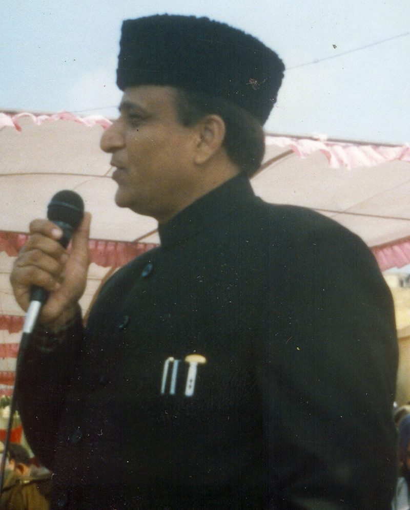

आजम खान के करीबियों पर शिकंजा, ED जौहर ट्रस्ट-यूनिवर्सिटी मामले में करेगी जांच

सपा नेता आजम खान — जौहर ट्रस्ट और यूनिवर्सिटी मामले में ED की जांच तेज
समाजवादी पार्टी के वरिष्ठ नेता आजम खान और उनके परिवार से जुड़े मौलाना मोहम्मद अली जौहर ट्रस्ट तथा मोहम्मद अली जौहर यूनिवर्सिटी मामले में प्रवर्तन निदेशालय (ED) की जांच आगे बढ़ने के साथ ही उनके करीबियों की मुश्किलें बढ़ सकती हैं. जांच एजेंसी को हालिया छापेमारी के दौरान जब्त दस्तावेजों की पड़ताल में कथित तौर पर कुछ संदिग्ध और फर्जी फर्मों के बारे में अहम जानकारी मिली है. इन फर्मों के जरिये बड़ी रकम के कथित डायवर्जन और संदिग्ध लेनदेन के सुराग मिलने की बात सामने आई है. सूत्रों के मुताबिक, जांच आगे बढ़ने पर कुछ अन्य ठिकानों पर भी कार्रवाई हो सकती है. ED जौहर ट्रस्ट और जौहर यूनिवर्सिटी में चंदे की रकम तथा सरकारी परियोजनाओं से जुड़े ठेकेदारों के माध्यम से कराए गए निर्माण कार्यों में कथित वित्तीय अनियमितताओं की मनी लांड्रिंग एंगल से जांच कर रही है. एजेंसी ने बीते महीने रामपुर, सहारनपुर और दिल्ली म